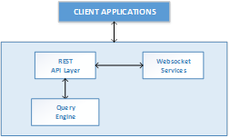

© 2015-2016 General Electric Company. All rights reserved.
© 2015-2016 General Electric Company. All rights reserved.Each Intelligent Environments service consists of an API layer, which can also reveal WebSocket information, and a query engine.
The following graphic illustrates the Intelligent Environments Service components:

Client applications can access data using service REST API endpoints. Your application makes an HTTPS request and parses the response. Requests for live data provide a Websocket link. To retrieve WebSocket data, you must use a WebSocket client.
You can use any web-development language to access the APIs.
The query engine enables developers to use JSON to retrieve data about any object or any object property.